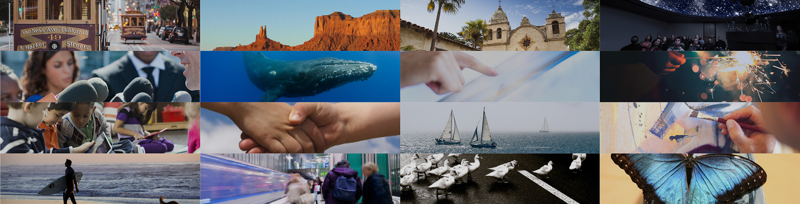

<!doctype html>
<html lang="en-us">
<head>
	<!--Page Title-->
	<title>KQED</title>
	<!--Meta Tags-->
	<meta charset="UTF-8">
	<meta name="author" content="Stectech">
	<meta name="keywords" content="" /> 
	<meta name="description" content="" />
	<!-- Set Viewport-->
	<meta name="viewport" content="width=device-width, initial-scale=1.0" />
	<meta http-equiv="content-type" content="text/html; charset=UTF-8" />
	<link rel="stylesheet" href="css/style.css" type="text/css" />
	<!--[if IE]>
		<script src="http://html5shiv.googlecode.com/svn/trunk/html5.js"></script>
	<![endif]-->
</head>
<body class="about-page">
	
	<!-- Header -->
	<header>
		<div class="container">
			<div class="logo">
				<h1>
					<a href="#"></a>
				</h1>
			</div>
			<div class="nav-menu-wrapper">
				<ul class="nav-menu">
					<li><a href="#">CAMPAIGN 21</a></li>
					<li><a href="#">PROGRESS</a></li>
					<li><a href="#">THE FUTURE</a></li>
					<li class="active-menu-item"><a href="#">about</a></li>
				</ul>
			</div>
		</div>
	</header>
	<div class="innerpage-head">
		
		<div class="container">
			<h2>ABOUT</h2>
		</div>
	</div>

	<!-- Page-Content -->
	<div class="page-content">
		<div class="container">
			<p>KQED is for everyone who wants to be more. Our television, radio, digital media and educational services change lives for the better and help individuals and communities achieve their full potential.</p>
			<p>KQED serves the people of Northern California with a community-supported alternative to commercial media. We provide citizens with the knowledge they need to make informed decisions; convene community dialogue; bring the arts to everyone; and engage audiences to share their stories. We help students and teachers thrive in 21st century classrooms, and take people of all ages on journeys of exploration—exposing them to new people, places and ideas.</p>
			<p>We celebrate diversity, embrace innovation, value lifelong learning and partner with those who share our passion for public service.</p>
		</div>
	</div>

	<!-- Cascade-Boxes -->
	<div class="cascadeboxes-wrapper" id="cbs-aboutpage">
		<div class="single-box" id="box-no1" data-counter="1">
			<div class="inactive-overlay"></div>
			<div class="overlay">
				<h3>KQED public television <i class="">+</i></h3>
			</div>
		</div>
		<div class="single-box" id="box-no2" data-counter="2">
			<div class="inactive-overlay"></div>
			<div class="overlay">
				<h3>KQED public radio <i class="">+</i></h3>
			</div>
		</div>

		<div class="details" id="box-no1-details" data-counter="1" >
			<div class="container">
				<p>KQED Public Television is one of the nation’s most-watched public television stations during primetime. KQED produces and acquires programs that inspire, inform, and entertain the people of Northern California. KQED broadcasts the best available programs from PBS, APT, and other distributors on KQED 9, KQED+, KQED Life, KQED World, V-Me, and KQED Kids, and also produces its own unique national and local programs, series, and specials. Airing more independent films than any other public broadcasting station in the country, KQED is committed to bringing the work of local and independent film producers to the community. KQED video content is now widely available for streaming and downloads on this site and on iTunes.</p>
			</div>
		</div>
		<div class="details" id="box-no2-details" data-counter="2">
			<div class="container">
				<p>KQED Public Radio, home of Forum with Michael Krasny and The California Report, is the most-listened-to public radio station in the nation with an award-winning news and public affairs program service. Listen on 88.5 FM or Comcast channel 960 in San Francisco, 89.3 FM in Sacramento, 88.3 FM in Santa Rosa and 88.1 FM in Martinez. KQED Public Radio 88.5 FM and 89.3 FM also broadcast in analog and HD Radio technology. Stream programs live and download archives and audio podcasts at kqed.org, featuring unique content on one of the most-visited station sites in public broadcasting.</p>
			</div>
		</div>

		<div class="single-box" id="box-no3" data-counter="3">
			<div class="inactive-overlay"></div>
			<div class="overlay">
				<h3>KQED interactive <i class="">+</i></h3>
			</div>
		</div>
		<div class="single-box" id="box-no4" data-counter="4">
			<div class="inactive-overlay"></div>
			<div class="overlay">
				<h3>KQED education <i class="">+</i></h3>
			</div>
		</div>

		<div class="details" id="box-no1-details" data-counter="3" >
			<div class="container">
				<p>KQED Interactive develops content and applications for digital platforms and mobile devices. Since 1994, KQED Interactive has provided users with a place to interact, learn more, and connect with others on the issues and topics explored on radio and television. The website hosts online services for KQED Public Television, Public Radio, and Education, and serves as a community convener, providing event listings, resources, online polls, podcasts, blogs and other items of timely interest. KQED Interactive functions as KQED’s third media platform, delivering content specifically acquired and produced for the Web.</p>
			</div>
		</div>
		<div class="details" id="box-no2-details" data-counter="4">
			<div class="container">
				<p>Education is central to the mandate of public media. KQED Education is a distinct and critical contributor to KQED’s public service mission, creating and disseminating unique, engaging educational content focused on accelerating learning for youth aged 11–24 in the Bay Area and beyond. KQED Education content and services facilitate powerful learning experiences that inspire and educate more students to be college and career ready, to increase their sense of voice and agency, and to expand their civic engagement.</p>
			</div>
		</div>

	</div>

	<!-- Footer -->
	<footer>
		<div class="container">
			<a href="#" class="bold-link"><span data-text="KQED.COM">KQED.COM </span></a>
		</div>
		<div class="footer-bar">
			<div class="container">
				<p class="copyright-note">© KQED 2015</p>
				<div class="footer-link"><a href="#">CONTACT US</a></div>
			</div>
		</div>
	</footer>

	<!-- Javascript -->
	<script type="text/javascript" src="js/min/main-min.js"></script>
</body>
</html>